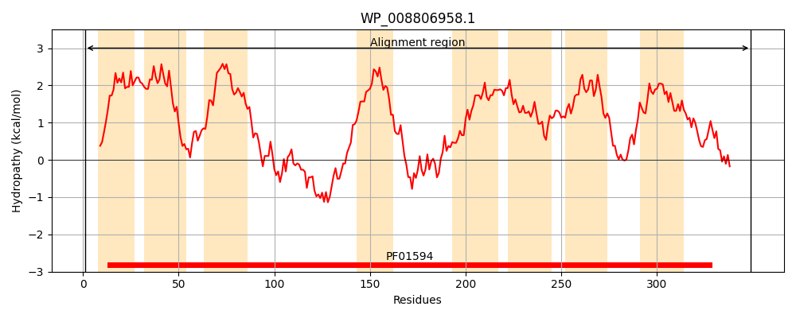
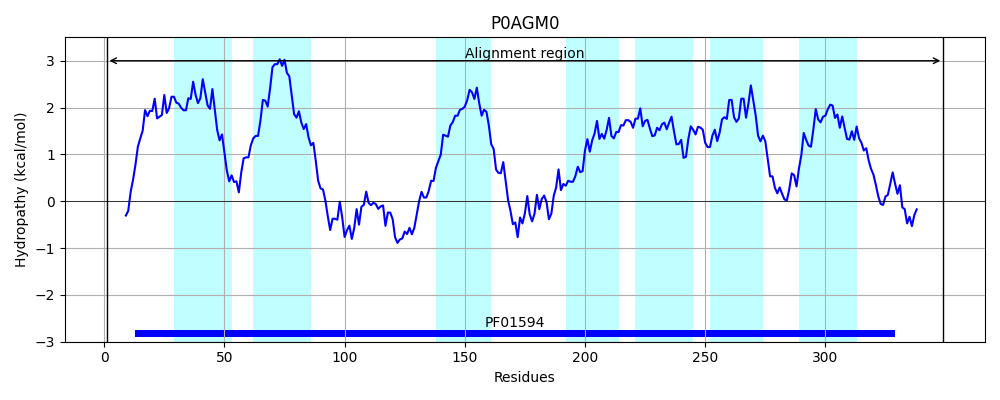
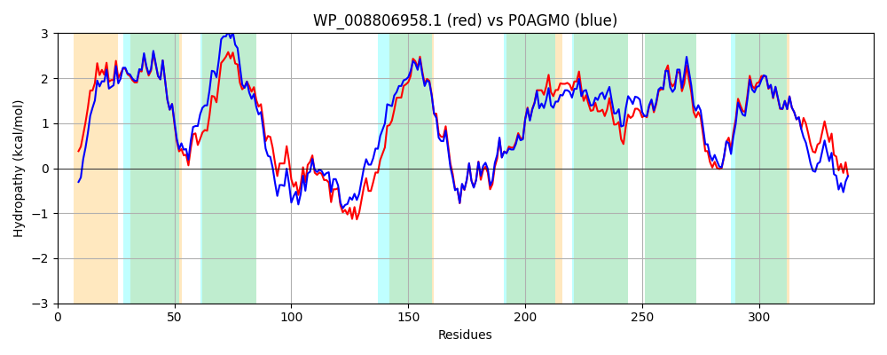

Hit Accession: P0AGM0
Hit TCID: 2.A.86.1.2
Hit Description: gnl|BL_ORD_ID|8868 gnl|TC-DB|P0AGM0|2.A.86.1.2 UPF0118 inner membrane protein yhhT OS=Escherichia coli (strain K12) GN=yhhT PE=1 SV=1
Mach Len: 349
e:0.000000
Query TMS Count : 8
Hit TMS Count: 7
TMS-Overlap Score: 7.850000
Predicted Substrates:None
BLAST Alignment:
Score: 1523 , Bit scores: 591 bits, E-value: 0.0e+00, Alignment length: 349, Percentage identity: 82
Query: 1 MSSPQADKAGLHILLKLAALVIILAGIHAAADILVQLLLALFFAIVLNPLVTWFIRRGVRRPFAITLVVTAMLVMLTALLGVLAASLNDFVAMLPDFNRALTRKILQLQEYLPFLNLHINPERMLRRMDSERLMTWATTLMTQLSGAMASIVLLVMTVIFMLFEVRHLPYKLRFALNNPRLHIAGLHRALKGVTHYLALKTLISLWTGLIVWLGLLAMGVQFALMWGVLAFLLNYVPNIGSAISAIPPMLQALLFSGIYECLLVGALFLVVHMVLGNMVEPRMMGHRLGMSTLVVFLSLLVWGWLLGPVGMLLSVPLTSVCKIWMETTVGGSKLAILLGPGRPKSRLPG 349
M +PQ DK G+HILLKLA+LV+ILAGIHAAADI+VQLLLALFFAIVLNPLVTWFIRRGV+RP AIT+VV ML+ LTAL+GVLAAS N+F++MLP FN+ LTRK+ +LQE LPFLNLH++PERML+RMDSE+++T+ T LMT LSGAMAS++LLVMTV+FMLFEVRH+PYK+RFALNNP++HIAGLHRALKGV+HYLALKTL+SLWTG+IVWLGL MGVQFALMW VLAFLLNYVPNIG+ ISA+PPM+Q LLF+G+YEC+LVGALFLVVHMV+GN++EPRMMGHRLGMST+VVFLSLL+WGWLLGPVGMLLSVPLTSVCKIWMETT GGSKLAILLGPGRPKSRLPG
Sbjct: 1 METPQPDKTGMHILLKLASLVVILAGIHAAADIIVQLLLALFFAIVLNPLVTWFIRRGVQRPVAITIVVVVMLIALTALVGVLAASFNEFISMLPKFNKELTRKLFKLQEMLPFLNLHMSPERMLQRMDSEKVVTFTTALMTGLSGAMASVLLLVMTVVFMLFEVRHVPYKMRFALNNPQIHIAGLHRALKGVSHYLALKTLLSLWTGVIVWLGLELMGVQFALMWAVLAFLLNYVPNIGAVISAVPPMIQVLLFNGVYECILVGALFLVVHMVIGNILEPRMMGHRLGMSTMVVFLSLLIWGWLLGPVGMLLSVPLTSVCKIWMETTKGGSKLAILLGPGRPKSRLPG 349 | Protein Hydropathy Plots: |
|---|
|  |  |
Pairwise Alignment-Hydropathy Plot:
|
|---|
|  |